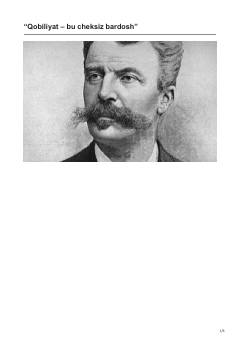

QBBuyuk fransuz yozuvchisi Gi de Mopassanning hayoti va ijodiy faoliyati haqida biografik asar.
Ushbu asar buyuk fransuz yozuvchisi Gi de Mopassanning hayoti va ijodiy yo'liga bag'ishlangan. Kitobda adibning bolaligi, ijodiy shakllanishi, mashhur asarlarining yaratilish tarixi hamda uning adabiyot olamiga qo'shgan hissasi haqida so'z boradi.